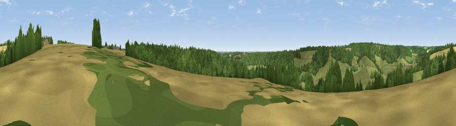

Viewpoint near Hambleden
#31067 in England · top 33% of its area beats it · near HambledenThe view, rendered

A 360° render of this exact spot computed from the terrain model, tree cover and land cover — summer colours, afternoon light, calibrated against photographs of famous viewpoints. Real trees, hedges and buildings will differ in detail.
The panorama
Grey silhouette: terrain skyline in each direction (720 bearings, Earth curvature and refraction included). Dashed green: skyline with trees (+15 m) and buildings (+8 m) as obstacles. Blue strip: how far the ground is visible on each bearing.
Where the view opens
Wedge length = distance to the farthest visible ground on that bearing (vegetation-aware). Rings at 10, 25 and 50 km.
What fills the view
54% grassland · 38% woodland · 7% cropland ·
Angular shares of the visible panorama (visual magnitude), not map area. Landscape diversity 0.40 (0–1 Shannon).
Key numbers
More beautiful places nearby
The staircase of upgrades: each row has a higher view potential than everything closer. Driving times are estimates from straight-line distance, calibrated against real road routing — check an actual route before setting out.
| Place | Direction | Drive | Score |
|---|---|---|---|
| Viewpoint near Hambleden | SSW · 2 km | ~5 min | 45.3 |
| Viewpoint near Turville | WNW · 2 km | ~6 min | 50.4 |
| Viewpoint near Fawley | W · 5 km | ~10 min | 56.1 |
| Fultness Wood Hill | ESE · 8 km | ~16 min | 57.8 |
| Viewpoint near Watlington | NW · 10 km | ~19 min | 67.1 |
| Viewpoint near Watlington | NW · 10 km | ~19 min | 70.6 |
| Viewpoint near Lewknor | NW · 10 km | ~20 min | 70.8 |
| Viewpoint near Lewknor | NNW · 11 km | ~21 min | 74.4 |
51.58605, -0.86583 · source: screening · position refined by local search. Computed location — check access rights before visiting.